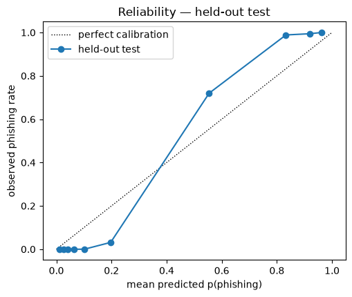
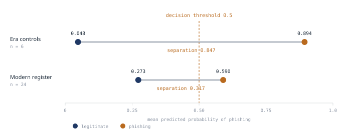
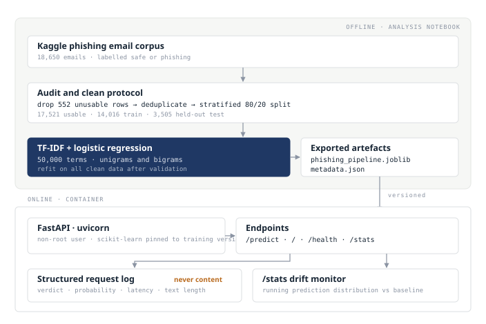

Applied project · Text classification and deployment · Complete
Phishing Email Detection
A binary text classifier served through a containerised API, developed alongside the measurements that establish what its reported performance covers. The headline figures are strong, and the more useful result is the analysis identifying where they stop applying.
Auditing the Corpus
The dataset is the Kaggle phishing email corpus, containing 18,650 emails
labelled either safe or phishing. Its construction is undocumented, which is the
reason the sections below spend as much effort on what the corpus contains as on
the model fitted to it. Three properties are established before any model is
fitted. Of the total, 552 rows
carry no usable text, including 533 holding the literal placeholder string
"empty", which a model would memorise as a class signal. A further
3.2% duplicate another row exactly, which affects evaluation because a random
split places verbatim copies of training emails into the test set. No text
appears under both labels, so deduplication discards no information.
Evaluating identical features and model under both protocols isolates the cost of that leakage. Under the naive protocol one test email in twenty is a verbatim copy of a training email, and deduplicating before the split reduces accuracy by approximately half a percentage point, indicating that the classifier depends only marginally on memorised text.
Model Selection
Linear SVM leads the benchmark at 0.980 cross-validated F1 against logistic
regression at 0.972, a margin several times the fold-to-fold spread. Logistic
regression is the model that ships, because the service returns a calibrated
probability on which the operating threshold, the browser interface and the
monitoring endpoint all depend, whereas LinearSVC exposes only
decision-function margins. Its coefficients are also directly interpretable,
which the ablation described below requires. Wrapping the support vector machine in
CalibratedClassifierCV would recover probabilities from the
stronger model, and that option is recorded and deferred, since the binding
constraint on this model is corpus provenance and not the final fraction of
in-corpus F1.
Held-Out Performance
| Metric | Value | Metric | Value |
|---|---|---|---|
| Accuracy | 0.979 | F1, phishing class | 0.972 |
| ROC-AUC | 0.997 | Brier score | 0.029 |
Measured on the 3,505 held-out emails from the clean split described above. Those figures describe mail resembling the training corpus, and the two sections that follow establish what the model relies on and where it stops working.
Probability Calibration

The ROC curve assesses only the ordering of predictions. A deployed filter needs more than an ordering, because the operating threshold has to correspond to a real error rate. The Brier score of 0.029 and the curve above establish that it does, at least for mail resembling the training corpus.
Calibration is what turns the threshold into a business decision. An operator setting the cut at 0.8, expecting roughly one error in five among flagged messages, depends on that probability meaning what it says. The exported artefact therefore returns the probability and not the label, so the operating point can be set per deployment and revised as traffic changes.
Inspecting the highest-confidence errors shows the expected failure modes. Marketing-flavoured legitimate mail draws false positives, while terse or unusually formatted phishing draws false negatives. Both fall within the categories that a threshold review and live monitoring are intended to manage.
What the Model Learned
A benchmark score of this size warrants scrutiny. The strongest phishing-leaning coefficients are the terms a domain expert would expect, namely click, free, remove, money and offer. The strongest legitimate-leaning coefficients are enron, vince, louise, linguistics, edu and the years 2000 to 2002.
These are not features of legitimacy but features of provenance. The legitimate class is drawn overwhelmingly from the Enron corpus and an academic linguistics mailing list, both collected several years before the phishing samples, suggesting that the classifier is partly determining whether a message is Enron-era corporate or academic correspondence. Masking the source-identifying tokens and re-running the identical protocol costs a small proportion of performance, indicating that the in-corpus signal is not carried by a handful of named tokens.
Behaviour Outside the Training Corpus
The ablation establishes that named tokens are not load-bearing. It does not establish robustness beyond the corpus, and that distinction proved to be the substantive finding. A probe set of thirty short emails was written for the purpose, twenty-four in a contemporary register and six as controls using the vocabulary of the training corpus. The controls matter as much as the modern probes, since a decline measured without them could be attributed to the probes being more difficult.
| Probe group | accuracy | class separation | prediction sd |
|---|---|---|---|
| Era controls (n = 6) | 1.000 | 0.847 | 0.465 |
| Modern register (n = 24) | 0.833 | 0.317 | 0.219 |
| Held-out test set (n = 3,505) | 0.980 | — | — |

The model does not become confidently wrong outside its corpus. It becomes uninformative in precisely the region where the deployed threshold sits. Mean prediction on modern mail is 0.432 against a base rate of 0.5, close enough to rule out systematic bias, while the prediction standard deviation falls from 0.465 to 0.219. Within the corpus a threshold of 0.5 lies far from both modes, while on modern mail it passes through the middle of the distribution, so small differences in wording determine the verdict.
Separating the two possible failures makes the result precise. Bias would mean the model favouring one class outside its corpus, which a threshold shift could partly correct. Loss of resolution means it no longer separates the classes, which no threshold can correct. Mean prediction on modern mail is 0.432 against a base rate of 0.5, so bias is negligible, while the prediction standard deviation falls from 0.465 to 0.219 and the Brier score rises from 0.008 to 0.142. Under the standard decomposition of the Brier score into reliability, resolution and the irreducible uncertainty of a balanced set, resolution net of reliability falls from 0.242 to 0.108. The model has stopped discriminating where it previously separated, and no threshold recovers that.
Decomposing the predicted log-odds into per-term contributions identifies the mechanism. Vocabulary coverage barely falls, from 0.62 to 0.535, so unfamiliar words are not the cause. Evidence supporting the true class approximately halves in both directions while evidence supporting the incorrect class rises, and the log-odds contract toward the intercept. The terms responsible are ordinary office vocabulary carrying an association that is correct within the corpus and misleading outside it, which no preprocessing rule would identify without a second corpus for comparison.
The Service

The notebook exports a versioned scikit-learn pipeline alongside metadata
recording the library version, the training protocol and the held-out metrics.
A FastAPI application loads both and serves a /predict endpoint
returning the label, the phishing probability and the model version, a browser
interface for manual inspection, /health for orchestration, and
/stats for monitoring. The container runs as a non-root user and
pins the scikit-learn version to the one used in training.
Every request is logged as a single JSON line recording the verdict, the
probability, the latency and the character count, never the message text.
The /stats endpoint tracks the running prediction distribution
against the held-out baseline, and the probe study determines what to watch
for. Traffic unlike the training corpus produces predictions clustered around
the threshold, making a rising proportion of mid-range probabilities the
earliest available indication that the operating point requires revision.
Limitations
The evaluation rests on a single corpus whose phishing-class provenance is undocumented. Construction artefacts were found on the legitimate side because its sources are identifiable, and the same exercise cannot be performed on the phishing side, so comparable artefacts may be present and undetected.
The probe study is a diagnostic instrument and not a measurement. Thirty hand-written emails support no confidence interval, and they were written by someone already aware of the model's weaknesses, so they are not a neutral sample. What the study establishes is that the effect is reproducible, mechanically explained by an exact decomposition of the score, and concentrated where the threshold sits.
The benchmark figures are mildly optimistic, since the vectoriser was fitted on the full training set before cross-validation folding. The effect is identical across models and leaves the ranking intact, and the held-out evaluation is unaffected. The classifier also uses text alone. URL structure, header provenance and attachment metadata all carry substantial signal in a production mail filter and sit outside its scope by construction.
Further Work
External validation is the first extension and the one that would change the most. Scoring the artefact unchanged against a labelled corpus from a different source would convert the probe finding into a figure with a sample size behind it. It has to be preceded by a near-duplicate audit against this training set, since undocumented provenance means overlap between the two corpora cannot be ruled out and any overlap would inflate the result.
A threshold study is the second. The 0.5 default is a property of this corpus and carries no operational meaning, whereas the cost asymmetry between quarantining legitimate mail and admitting a phishing message is measurable per organisation and is what should set the operating point. Calibrating the support vector machine through Platt scaling is the third and least important, worth at most 0.8 F1 points on a corpus whose binding constraint is provenance.